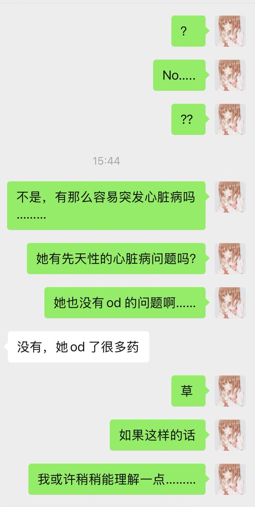
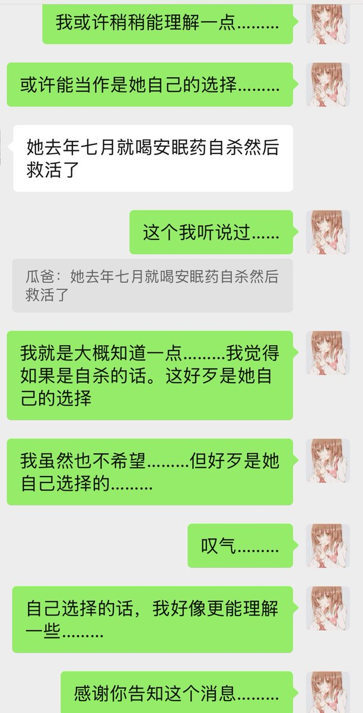

北雁冬翼（simone luxem）🏳️⚧️🏳️🌈🔬
@Simone_Luxem
@garrulous_abyss 啊啊啊啊啊啊？啊啊啊啊啊？？….还见过呢….


garrulous abyss🌈
@garrulous_abyss
记阿瓜
今天下午，收到瓜爸的消息，说阿瓜(aqua）去世了。
一时半会当然非常难以接受就是了……但听说阿瓜可能，并非完全因为意外……好像觉得又稍微释然了一些……
虽然我会不断下意识的，告诉自己说，如果是她自己选择的，或许应该理解和祝福。
但还是会难受就是了(1/n) https://t.co/YlfYcj2PMN